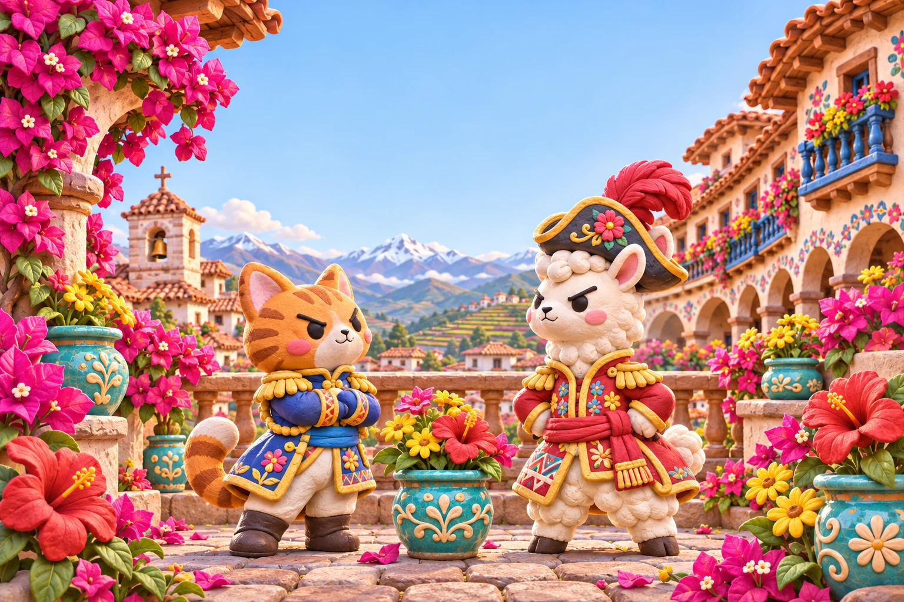

Idealistas
Rescates: 2Mazo 25
Realistas
Rescates: 2Mazo 25
Ronda 1 de 12Turno idealista
Movimiento / ataque

Arrastra una ficha propia a un hexágono verde para mover o a un rival marcado para atacar. También puedes tocar una ficha y luego su destino.
Haz hasta dos acciones por turno: mueve como máximo una ficha una casilla y declara un ataque en el orden que prefieras. El cañón ataca a distancia con +2; las fichas de vanguardia tienen +2 al atacar.
Cada jugador reserva tres cartas, pero solo puede activar dos por combate. Dos iguales producen COMBO +1. Dos Golpes decisivos vencedores permiten eliminar una segunda ficha rival. Exploración (+1) busca una carta de tu mazo que sustituye a la carta jugada después de la batalla.
Invocar cañón suma +1 durante el combate y permite transformar una ficha después. En empate salen ambas fichas. Gana por eliminación o por conservar más fichas al final de la ronda 12.
Llega a una estrella enemiga para gastar un marcador y rescatar una ficha normal.